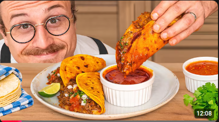

Home
Birria Tacos & Roasted Salsa

Thumbnail and recipe tutorial by Joshua Weismann and the experts from Birria-Landia
Joshua Weismann ft the experts from Birria-landia
View the AMAZING tutorial video here:
The Juiciest QuesaBirria Tacos At Home
Ingredients
Beef and Consommé:
- 1.5 lbs (680g) beef brisket, cut into 2-3” (5-7.6cm) chunks
- 2 lbs (907g) top round, cut into 2-3” (5-7.6cm) chunks
- 1.5 lbs (680g) cross-cut beef shank
- Kosher salt and freshly cracked black pepper, to taste
- Neutral oil, for searing
- Water, to cover
- 9 guajillo chiles, stems and seeds removed
- ½ white onion, peeled and roughly chopped
- 8 cloves garlic, peeled
- 2 chipotle peppers in adobo, plus a spoonful of the sauce
- ¼ cup (60g) tomato paste
- 3 Tbsp (45mL) apple cider vinegar
- 1 Tbsp (10g) chicken bouillon powder, Knorr brand preferred
- ½ tsp (~2g) freshly ground black pepper
- ½ tsp (~2g) ground white pepper
- 1 Tbsp (10g) beef bouillon powder, Knorr brand preferred
- 1 Tbsp (12g) light brown sugar
- 2 tsp (7g) smoked paprika
- 2 tsp (3g) dried oregano
- ½ tsp (~1g) dried thyme
- ¼ tsp (~1g) ground cloves
- ¼ tsp (~1g) ground cinnamon
- 1 Tbsp (10g) kosher salt, or to taste
- ½ tsp (~2g) ground cumin
- 4 bay leaves
- ½ cup (120mL) neutral oil (canola, avocado, etc.)
Salsa:
- 8 guajillo chiles
- 4 chiles de árbol
- 4 Roma tomatoes
- 4 large tomatillos, husks removed and rinsed
- 2 cloves garlic, peeled
- 1 chipotle in adobo, plus a spoonful of sauce
- 1 Tbsp (15mL) apple cider vinegar, plus more to taste if needed
- 1 Tbsp (10g) kosher salt, plus more to taste if needed
- Water, to loosen if needed
Taco Assembly: *see Notes for all*
- 2 4” (10 cm) corn tortillas
- 1 large white onion, finely diced
- 1 bunch fresh cilantro, finely chopped
- Limes, cut into wedges
Quesabirria Assembly:
- 2 4” (10 cm) corn tortillas
- Oaxaca cheese, shredded, or full-fat low-moisture mozzarella
- Limes, cut into wedges
Mulita Assembly:
- 2 of 4” (10 cm) corn tortillas
- Full-fat low-moisture mozzarella, shredded
- 1 large white onion, finely diced
- 1 bunch fresh cilantro, finely chopped
- Limes, cut into wedges
Directions
Beef and Consommé:
- Season the meat generously on all sides with salt and black pepper.
- Heat a large heavy-bottomed pot, or Dutch oven, over medium-high heat.
- Once hot, add enough neutral oil to lightly coat the bottom of the pot.
- Sear the meat until nicely browned on all sides, about 1-2 minutes per side.
- Transfer to a sheet tray and repeat with the rest of your meat.
- While you are searing the meat, fill a medium saucepot with water and bring to a boil.
- Blanch the guajillo chiles for 30 seconds, then turn off the heat and let them steep until softened, about 5 minutes.
- Transfer the chiles to the base of a blender along with the onion, garlic, chipotles in adobo, tomato paste,and vinegar.
- Blend on high until as smooth as possible.
- In a medium-sized mixing bowl, whisk together the chicken bouillon powder, black pepper, white pepper, beef bouillon powder, brown sugar, paprika, oregano, thyme, cloves, cinnamon, salt, cumin, and bay leaves.
- Return all of the meat to the pot then add just enough water to cover.
- Set over medium-high heat and bring to a boil.
- Use a skimmer, or large spoon, to remove any impurities that rise to the top, continuing until they have all been removed.
- Add the blended chili mixture, the spice mix, and the oil to the pot of simmering beef.
- Mix thoroughly to combine then reduce the heat to low, cover with a lid, and let braise until fall apart tender, about 3½ hours. Once tender, turn off the heat and let rest for 15-20 minutes. At this stage, use a spoon to skim off as much fat from the surface as possible, reserving it in a small bowl.
- Transfer the meat to a large cutting board, then chop into bite-sized pieces.
- Season the meat to taste with some of the braising liquid and additional salt if needed,
- then add to a medium saucepot to keep warm until serving. Season the braising liquid to taste with salt if needed and keep warm for serving *see Notes*.
Salsa:
- In a large skillet set over medium-low heat, add in the guajillo chiles and chiles de árbol.
- Toast, turning occasionally, until slightly charred and fragrant, about 2-3 minutes.
- Remove the chiles from the pan then add the Roma tomatoes and tomatillos to the pan.
- Sear, flipping occasionally, until the skins are blistered and the vegetables are heated through, about 2-3 minutes per side.
- Transfer the charred vegetables to the base of a blender along with the toasted chiles, garlic, chipotle in adobo, and vinegar. Season to taste with salt and apple cider vinegar. Blend on high until smooth.
- Transfer to a serving bowl, let cool to room temperature, then cover and refrigerate until ready to serve.
Taco Assembly:
- Dunk two corn tortillas in the reserved fat from the braise.
- Toast briefly on a flat top, or cast iron pan, heated over medium heat just until lightly charred and heated through.
- Transfer to a plate then add a generous amount of the braised beef followed by onion, cilantro, and salsa.
- Repeat with as many tacos as you want. Serve alongside lime wedges and a ramekin of consommé.
Quesabirria Assembly:
- Dunk two corn tortillas in the reserved fat from the braise.
- Toast briefly on a flat top, or cast iron pan, heated over medium heat just until lightly charred and heated through.
- Spread a thin even layer of your shredded cheese over the tortilla, let melt, then top with a generous amount of the braised meat and a spoonful of your salsa.
- Repeat with as many quesabirrias as you want.
- Fold and serve alongside lime wedges and a ramekin of consommé.
Mulita Assembly:
- Dunk two corn tortillas in the reserved fat from the braise.
- Toast on a flat top, or cast iron pan, heated over medium heat until crunchy, about 2 minutes.
- Spread shredded mozzarella cheese on both tortillas. Load one tortilla with braised beef, salsa, cilantro, and onion then sandwich the second tortilla on top of the first.
- Repeat with as many mulitas as you want.
- Serve alongside lime wedges and a ramekin of consommé.
Notes:
There are three ways you may choose to serve this birria: tacos, quesabirrias, and mulitas.
Choose your own adventure and follow the respective directions.
The braising liquid is your consommé which you will serve on the side in a ramekin for dipping.